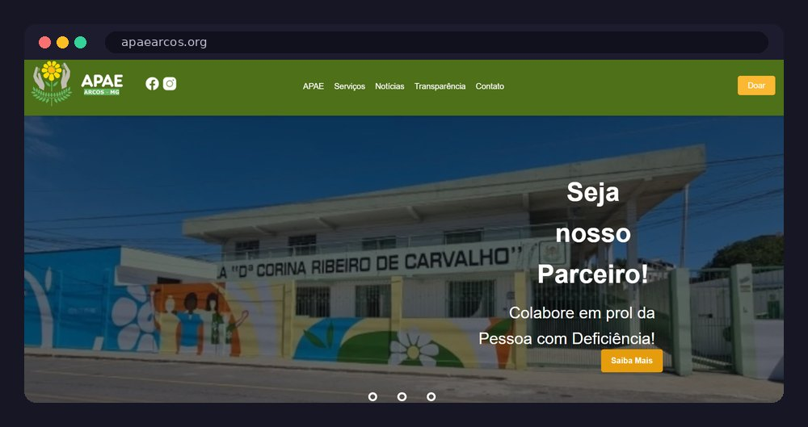

Front-end
- HTML
- CSS
- JavaScript
👋 Olá, eu sou
|
Tecnóloga em Análise e Desenvolvimento de Sistemas e administradora. Uno código e gestão para criar soluções que organizam processos e apoiam decisões.
Conheça um pouco
Minha formação une gestão e tecnologia.
Sou formada em Administração pela UEPB e em Análise e Desenvolvimento de Sistemas. Atualmente curso o MBA em Gestão de Projetos e a graduação em Ciências Contábeis.
Atuo como Gerente Administrativa e de Projetos no terceiro setor, acompanhando projetos, prestação de contas, contratos e captação de recursos, e uso dados e tecnologia para organizar informações e apoiar decisões.
Busco oportunidades em tecnologia, especialmente onde desenvolvimento, dados e processos de negócio se encontram.
O que eu uso
Tecnologias e ferramentas que uso no dia a dia.
HTML, CSS, JavaScript, PHP, Python, SQL e Git em nível intermediário · Power BI e TOTVS em nível básico
O que eu construí
Projetos publicados e em construção no meu GitHub.
Sistema web para gestão de escritórios de advocacia, criado por mim e em uso real no escritório Lagos & Manren.

Site da APAE de Arcos/MG: layout, desenvolvimento em PHP com banco de dados, domínio, hospedagem e publicação. Faço a manutenção mensal desde 2024.
Acompanhamento de projetos, prazos, orçamentos, fornecedores e prestação de contas.
Análise de dados públicos de transferências do governo, com gráficos e conclusões.
Como posso ajudar
Onde posso contribuir com a sua equipe.
Sites e sistemas web com HTML, CSS, JavaScript, PHP e banco de dados SQL.
Planilhas de controle, indicadores e dashboards para apoiar a tomada de decisão.
Planejamento, cronogramas, acompanhamento de prazos e prestação de contas.
Organização de rotinas, documentos, contratos e controles financeiros.
Minha caminhada
Experiência profissional e formação acadêmica.
FEAPAES PB · Campina Grande/PB
APAE Arcos/MG
Lagos & Manren Advocacia
APAE Campina Grande
APAE Campina Grande
Prefeitura Municipal de Campina Grande
Cruzeiro do Sul / UNIPÊ
UEPB
Faculdade Líbano
Unicesumar
SCRUMstudy
Vamos conversar?
Disponibilidade imediata · Campina Grande/PB · Remoto ou híbrido · CLT ou PJ